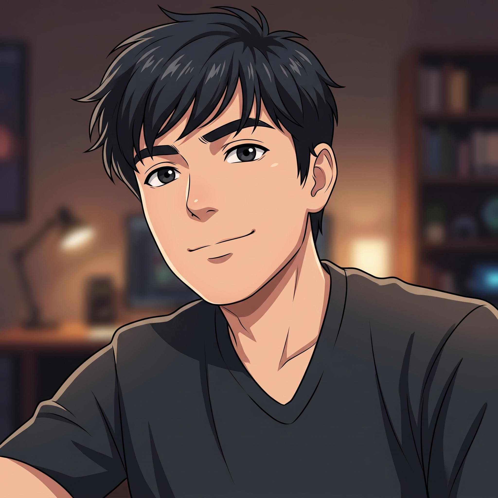

Desarrollo de software
Aplicaciones web y de escritorio con C#, ASP.NET, PHP, JavaScript, WPF y Java.
Ingeniero en Sistemas Computacionales. Más de 4 años moviéndome entre desarrollo web y de escritorio, datos, infraestructura, soporte y automatización.

JPSG / 01Código, continuidad y personas: el trabajo real aparece en las conexiones entre ellos.
Aplicaciones web y de escritorio con C#, ASP.NET, PHP, JavaScript, WPF y Java.
Bases de datos, stored procedures, APIs REST y conexiones que mantienen la información útil.
Servidores, virtualización, RAID, backups y restauraciones para que el trabajo no se detenga.
Microsoft 365, Entra ID, Active Directory, capacitación y soporte cercano.
Desarrollo, operación y soporte en instituciones donde la tecnología tiene que funcionar para alguien más.
Un archivo breve de piezas académicas construidas con intención, interfaz y código.
Proyecto educativo desarrollado con Unity y C#, pensado como experiencia de aprendizaje interactiva.
Qué demuestra
Integración de una experiencia educativa con Unity y C#.
Entender el problema antes de elegir la herramienta.
Usar Python, PowerShell o una integración cuando una tarea puede ser más consistente.
Dejar contexto, capacitar y hacer que la solución pueda sostenerse.
Atender a la persona, encontrar la causa y devolver continuidad.
Formación, certificaciones e idiomas tal como aparecen en mi recorrido.
Instituto Tecnológico de Tijuana · ago 2017 — jun 2023
ITJuana · may 2023 / CBTIS 116 · nov 2016
Si el reto necesita código, infraestructura y atención a usuarios, conversemos.
Hablemos